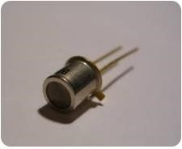

Practicas Profesionalizantes
Informe: Componente Fotoresistor y Supermercado con Estacionamiento

Integrantes: Flores Dylan, Rodríguez Nahúm,
Ríos Angelina, Patagua Lautaro, Tintilay Lautaro
Informe: Componente Fotoresistor
¿Qué es el Fotoresistor?
Un Fotoresistor, también conocido como LDR (Light Dependent Resistor), fotorresistencia, fotocelda o resistor dependiente de la luz es un componente electrónico cuya resistencia varia de forma inversamente proporcional a la intensidad de luz que incide sobre él. Su cuerpo está formado por una célula fotosensible y dos patillas o terminales para su conexión.

Características Técnicas del Fotoresistor
- Valores de resistencia: Entre 1mΩ en oscuridad y 100 Ω con luz brillante
- Disipación máxima: Entre 50mW a 1W
- Voltaje máximo: Hasta 600V
- Tiempo de respuesta: Aproximadamente 0.1 segundos (una décima de segundo) -Respuesta espectral: Amplia gama incluyendo infrarrojo, luz visible y ultravioleta
¿Para qué sirve el Fotoresistor?
El Fotoresistor sirve:
- -Para encender las luces del alumbrado público cuando llega la noche
- -Activar sistemas de seguridad como alarmas antirrobo que se activan por cambios en la iluminación
- -Iluminar hogares de forma automática llegada la noche
- -En Robótica al crear robots que siguen la luz
¿Cómo funciona el Fotoresistor?
Opera bajo el principio de fotoconductividad, basado en el efecto fotoeléctrico. Su funcionamiento se explica de la siguiente manera.
- -En la oscuridad los electrones están firmemente unidos a los átomos del semiconductor manteniendo alta resistencia.
- -Con la luz los fotones de luz incidente proporcionan energía suficiente a los electrones para saltar de la banda de valencia a la banda de conducción
- -Con la conducción los electrones libres y sus huecos asociados permiten el flujo de corriente eléctrica, reduciendo la resistencia.
Tipos de Fotoceldas
Existen varios tipos de fotoceldas, que se diferencian según su tecnología y aplicación:
- -Fotocelda de Resistor: Utilizan un resistor para medir la luz ambiental y activar o desactivar las luces según la cantidad de luz detectada. Es una forma básica de fotocelda.
- -Fotocelda de Fototransistor: Emplean un fototransistor para detectar la luz, lo que les da mayor sensibilidad y precisión.

- -Fotocelda de Interruptor Electrónico: Utilizan interruptores electrónicos para controlar la iluminación, ofreciendo mayor durabilidad.
- -Fotocelda de 3 Pines: Tienen tres terminales para entrada de energía, salida a la carga y neutro, usadas en alumbrado industrial y público para manejar mayores cargas.
- -Fotoceldas Inteligentes de 5 y 7 pines: Incorporan software para control remoto y gestión automatizada, además de monitorear y consolidar datos de funcionamiento.
Lugares en donde se encuentra el Fotoresistor
El Fotoresistor se encuentra en:
- -Sistemas de alumbrado público como en farolas y luminarias automáticas
- -En Estacionamientos con el control automático de iluminación
- -En Edificios Comerciales con iluminación automática de escaparates y fachadas
- -En Teléfonos Móviles con el ajuste automático del brillo de la pantalla
- -En Medidores de luz profesionales como Luxómetros y fotómetros
Supermercado con Estacionamiento
Se trata de un establecimiento ubicado en la ciudad que cuenta con fotoceldas que prenderán leds al llegar la noche iluminando el Supermercado. Con el estacionamiento se mostrara un cartel que diga donde esta libre y donde esta ocupando mostrando leds este mensaje
Materiales:
- -6 fotorresistencia
- -12 leds
- -13 resistencias 240
- -7 resistencias 1k
- -Un pulsador
- -2 arduinos
- -Auto de juguete